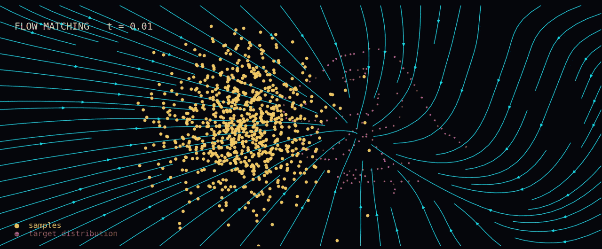

FlowMotion
PythonResearch implementation of FlowMotion, a target-predictive Conditional Flow Matching framework for text-driven 3D human motion generation.
View repository ↗
Manolo Canales Cuba — AI / ML Engineer
I research and build generative AI systems, with a focus on flow matching, diffusion, Transformer architectures, and 3D human motion generation. My work bridges mathematical modeling, machine learning, and production engineering.
About
I am an AI / ML engineer and researcher focused on generative models, machine learning, and computer graphics. My research explores flow matching, diffusion, and generative architectures for 3D human motion and other structured data.
My work spans the full AI engineering lifecycle: from mathematical formulation and model design to training, evaluation, optimization, deployment, and integration into real-world systems.
I am particularly interested in the space where applied mathematics, generative AI, and systems engineering meet — building models that are not only theoretically interesting, but efficient, reproducible, and useful in practice.
Featured Research
Target-Predictive Conditional Flow Matching for Jitter-Reduced Text-Driven Human Motion Generation
Generating 3D human motion from text that is both faithful and temporally stable remains challenging, especially in resource-constrained environments. FlowMotion introduces a training objective within Conditional Flow Matching that directly predicts the target motion rather than the intermediate velocity field, producing straighter and more stable trajectories during sampling.
The result: the best reported jitter on the KIT dataset and the second best on HumanML3D, with competitive FID on both — while preserving the fast synthesis characteristic of flow matching and keeping the model lightweight enough to run in resource-constrained environments.
Projects
A selection of research implementations, generative AI experiments, machine learning systems, and engineering projects.
Research implementation of FlowMotion, a target-predictive Conditional Flow Matching framework for text-driven 3D human motion generation.
View repository ↗Reimplementation of "Toward Characteristic-Preserving Image-based Virtual Try-On Network" for conditional image generation and virtual try-on.
View repository ↗Research website for the FlowMotion paper, presenting experiments, quantitative results, comparisons, and supplementary material.
View repository ↗High-performance caching system developed as an engineering project, demonstrating experience with performance-oriented software and systems design.
View repository ↗Visualization and debugging tool for inspecting the state of a high-performance caching system in real time.
View repository ↗Explore additional research experiments, machine learning implementations, engineering projects, and technical utilities.
View all repositories ↗Activity
A live snapshot of my GitHub contributions, pulled straight from my profile.
Stack
Contact
Open to AI / ML Engineering roles, research collaborations, and projects involving generative models and intelligent systems.